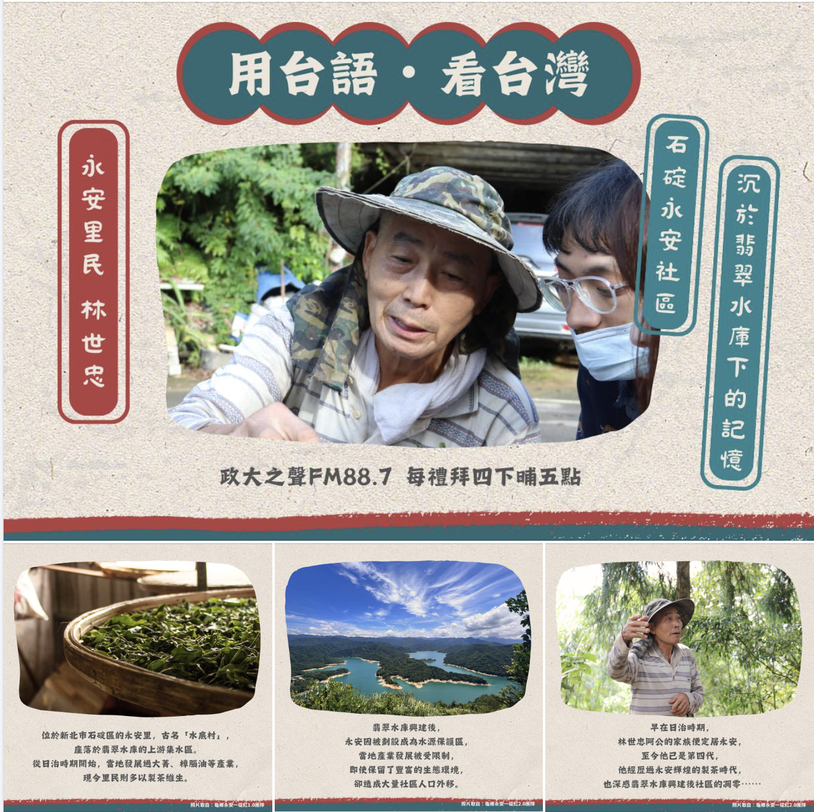

📌 本週主題
石碇永安社區 沉於翡翠水庫下的記憶
🎧 內容簡介
- 🌱🌱手拿茶藍在半腰 阮欲去茶山挽茶葉
身軀若濕驚人笑 若無艱苦錢不到哦 🌱🌱 - 你知道在新北市石碇區有一個叫作永安的山村嗎？
永安位於新北市石碇區，座落於翡翠水庫水源保護區中，
因水庫的興建，當地的發展備受限制，造成社區大量人口外移，
逐漸成為一個被遺忘的山村。
民國60年，永安擁有台灣第一座製茶示範工廠，一出產茶葉，就被茶行搶售，但輝煌的時代，隨著水庫的興建，如今已淹沒於水底。
這一集邀請家族已住在永安第四代的里民林世忠阿公，與我們分享永安從日治時期的產業發展，以及翡翠水庫落成後，為永安帶來的改變。
請聽眾朋友跟著主持人文馨的腳步，認識這個富有許多豐富生態，及悠久人文歷史的社區——永安✨